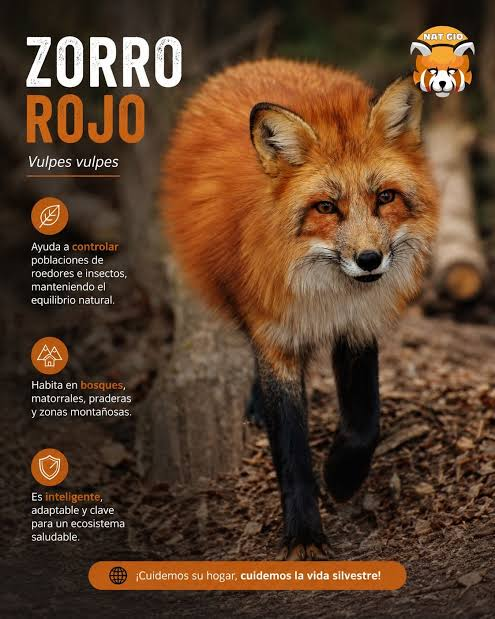

Los zorros son mamíferos de tamaño mediano pertenecientes a la familia
de los cánidos. Tienen un hocico alargado y puntiagudo, orejas grandes y triangulares,
y una cola larga y esponjosa que usan para equilibrarse y protegerse del frío. Son animales
principalmente solitarios, nocturnos y muy inteligentes. Su alimentación es omnívora, por lo que comen
desde pequeños roedores, aves e insectos hasta frutas y huevos. Viven en madrigueras excavadas en la tierra y
habitan en una gran variedad de ecosistemas alrededor del mundo, adaptándose con facilidad a diferentes climas.